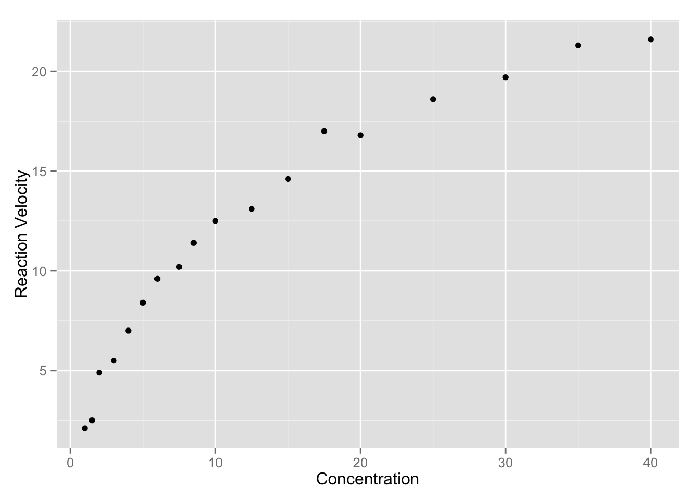
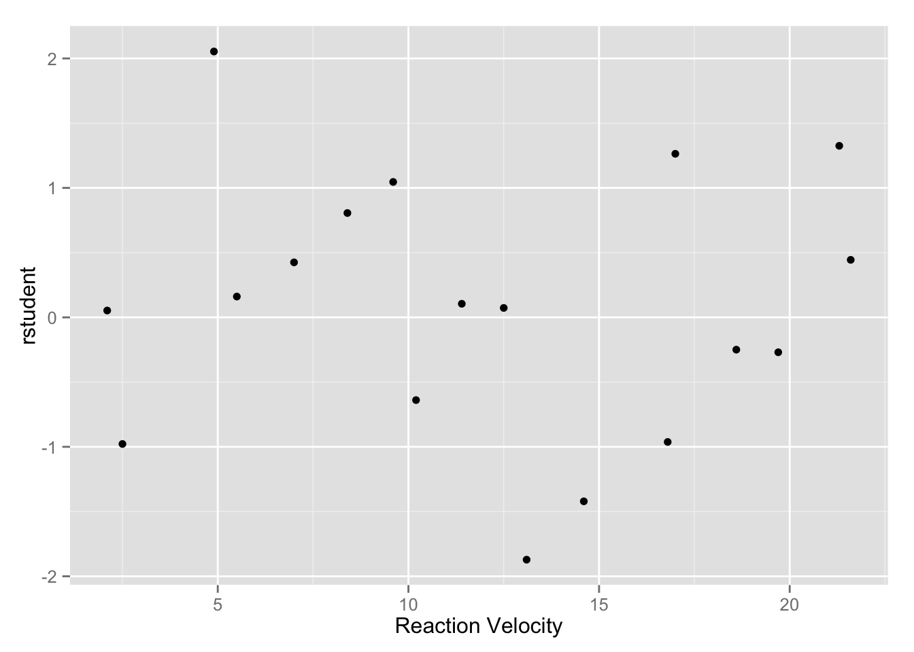
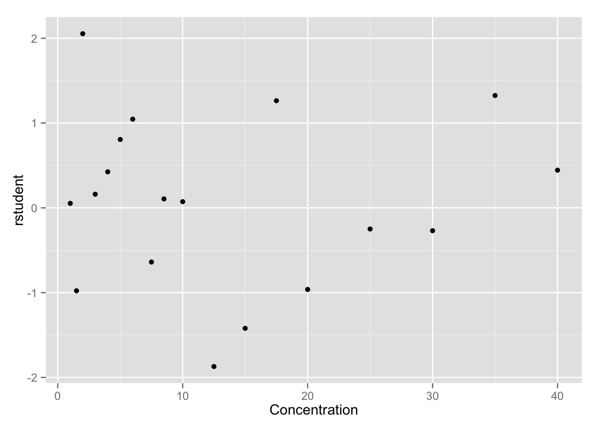
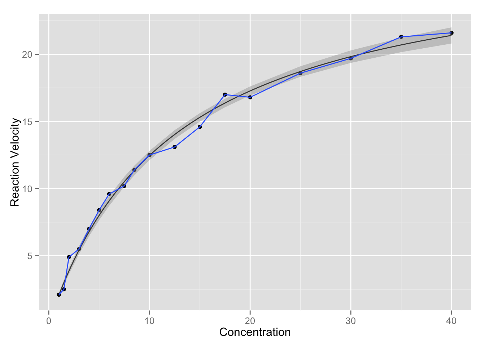
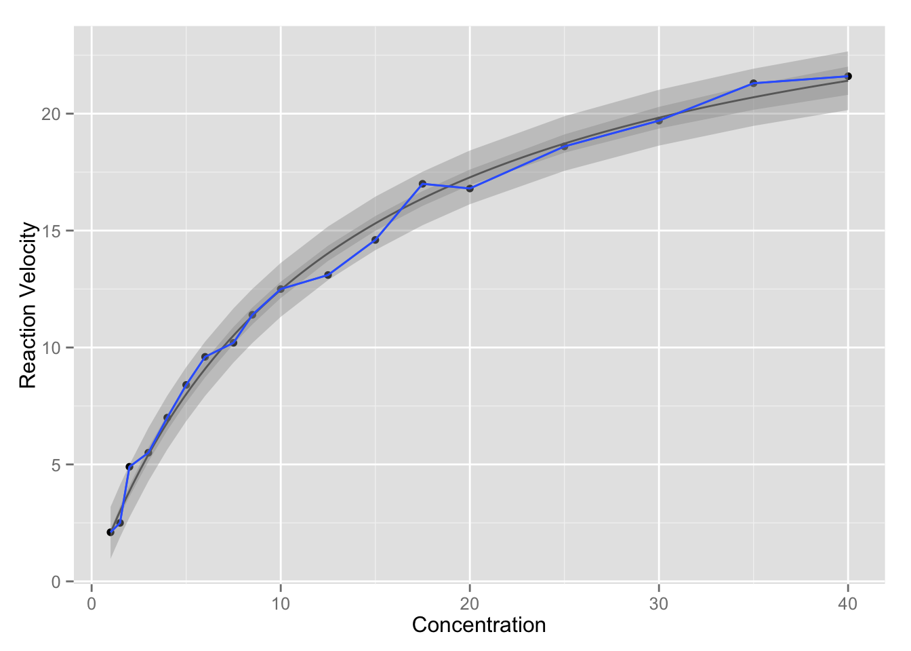

The velocity of a chemical reaction (\(y\)) is modeled as a function of the concentration of the chemical (\(x\)). There are a total of 18 observations. The desired model is
\[ y_i = \frac{\theta_0 x_i}{\theta_1 + x_i} + \epsilon_i. \]
To find reasonable starting values for \(\theta_0\) and \(\theta_1\), we take the inverse of the model expression (ignoring the error term) and fit the ordinary least-squares regression:
\[ \frac{1}{y_i} = \frac{\theta_1 + x_i}{\theta_0 x_i} = \frac{1}{\theta_o} + \frac{\theta_1}{\theta_0} (\frac{1}{x_i}).\]
enzyme <- read.table("datasets/enzyme.dat")
names(enzyme) <- c('y', 'x')| y | x | |
|---|---|---|
| 1 | 2.1 | 1.0 |
| 2 | 2.5 | 1.5 |
| 3 | 4.9 | 2.0 |
| 4 | 5.5 | 3.0 |
| 5 | 7.0 | 4.0 |
| 6 | 8.4 | 5.0 |
| 7 | 9.6 | 6.0 |
| 8 | 10.2 | 7.5 |
| 9 | 11.4 | 8.5 |
| 10 | 12.5 | 10.0 |
| 11 | 13.1 | 12.5 |
| 12 | 14.6 | 15.0 |
| 13 | 17.0 | 17.5 |
| 14 | 16.8 | 20.0 |
| 15 | 18.6 | 25.0 |
| 16 | 19.7 | 30.0 |
| 17 | 21.3 | 35.0 |
| 18 | 21.6 | 40.0 |
# plot the data
require(ggplot2)
p <- ggplot(data = enzyme, aes(x, y)) + geom_point() +
labs(y = "Reaction Velocity", x = "Concentration")
p
ols_fit <- lsfit(1/enzyme$x, 1/enzyme$y)
ols_fit$coefficients## Intercept X
## 0.03375868 0.45401397So the starting values for \(\theta_0\) and \(\theta_1\) are given by: \[\theta_0^{(0)} = 1 / \beta_0 = \frac{1}{0.03375868} = 29.62 \] \[\theta_1^{(0)} = \beta_1 / \beta_0 = \frac{0.45401397}{0.03375868} = 13.45 \]
The nls() function in stats package performs nonlinear (weighted) least-square estimates of the parameter of a nonlinear model. It can use a formula object to specify a model and any user-specified function can be used in the model. Because nonlinear models are sometimes complicated, here we showed how to use a customized nlmodel() function to specify the model.
To match the SAS output, trace = T is set to print out iteration history. Note that the first column corresponding to the objective function and the other columns corresponding to the parameter estimates for each iteration.
nlmodel <- function(x, theta0, theta1) theta0 * x / (theta1 + x)
nls_fit <- nls(y ~ nlmodel(x, theta0, theta1), data = enzyme,
start = list(theta0 = 29.62, theta1 = 13.45), trace = T)## 6.57116 : 29.62 13.45
## 4.303542 : 28.14228 12.59796
## 4.302271 : 28.13785 12.57534
## 4.302271 : 28.13708 12.57449
## 4.302271 : 28.13705 12.57445nls_fit## Nonlinear regression model
## model: y ~ nlmodel(x, theta0, theta1)
## data: enzyme
## theta0 theta1
## 28.14 12.57
## residual sum-of-squares: 4.302
##
## Number of iterations to convergence: 4
## Achieved convergence tolerance: 4.304e-07Parameter estimates and other model summaries can be obtained using the summary() function.
sm <- summary(nls_fit, correlation = T)
sm$coefficients # coefficients and their significance## Estimate Std. Error t value Pr(>|t|)
## theta0 28.13705 0.7279790 38.65091 3.137221e-17
## theta1 12.57445 0.7630534 16.47913 1.850253e-11sm$correlation # correlation matrix of parameters## theta0 theta1
## theta0 1.0000000 0.9366248
## theta1 0.9366248 1.0000000To get individual confidence intervals on paramter estimates, we need to know the standard error of the estiamtes as well as the degree of freedom of the estimates of \(\sigma^2\). That can be obtained from df.residual().
rdf <- df.residual(nls_fit)
# C.I. for theta0
sm$coefficients[1, 1] + qt(c(.025, .975), rdf) * sm$coefficients[1, 2]## [1] 26.5938 29.6803# C.I. for theta1
sm$coefficients[2, 1] + qt(c(.025, .975), rdf) * sm$coefficients[2, 2]## [1] 10.95685 14.19205To compute the leverage, we need \(F\) and \((F'F)^{-1}\). The tangent plane hat matrix is \(H = F(F'F)^{-1}F'\). The leverage values are the diagonal elements of the hat matrix.
cf <- nls_fit$m$gradient() # cf: capital f matrix
sm$cov.unscaled # (F'F)^(-1)## theta0 theta1
## theta0 1.970879 1.934914
## theta1 1.934914 2.165370ch <- cf %*% sm$cov.unscaled %*% t(cf)
# diagonal of hat matrix
kable(diag(ch), row.names = T, col.names = c("LEV"))| LEV | |
|---|---|
| 1 | 0.0176537 |
| 2 | 0.0328108 |
| 3 | 0.0484048 |
| 4 | 0.0759531 |
| 5 | 0.0956214 |
| 6 | 0.1072992 |
| 7 | 0.1124450 |
| 8 | 0.1117837 |
| 9 | 0.1080296 |
| 10 | 0.1003662 |
| 11 | 0.0882287 |
| 12 | 0.0818877 |
| 13 | 0.0831978 |
| 14 | 0.0919111 |
| 15 | 0.1271639 |
| 16 | 0.1783176 |
| 17 | 0.2379108 |
| 18 | 0.3010149 |
The studentized residual is computed as
\[r_i = \frac{e_i}{s \sqrt{1 - \hat{H}_{ii}} } \]
rstudent <- residuals(nls_fit) / (sm$sigma * sqrt(1 - diag(ch)))
enzyme <- data.frame(enzyme, rstudent)
qplot(y, rstudent, data = enzyme, geom = "point", xlab = "Reaction Velocity")
qplot(x, rstudent, data = enzyme, geom = "point", xlab = "Concentration")
The confidence interval is computed by \[\hat{Y}_0 \pm t_{(n-p, 1-\alpha/2)} s [f_0'(F'F)^{-1}f_0]^{1/2} .\] Note that if we want confidence interval at original \(x\) values \(x_i\), the definition for \(f_0\) here is just the transpose of \(F(\theta, x_i)\).
y0 <- fitted(nls_fit)
se <- apply(t(cf), 2, function(f0) {
sm$sigma * {t(f0) %*% sm$cov.unscaled %*% f0}^(.5)
})
ll <- fitted(nls_fit) + qt(.025, df.residual(nls_fit)) * se
ul <- fitted(nls_fit) + qt(.975, df.residual(nls_fit)) * se
ci <- data.frame(enzyme, ll, ul)
p + stat_function(fun = nlmodel, args = as.list(coef(nls_fit))) +
geom_smooth(aes(ymin = ll, ymax = ul), data = ci, stat="identity")
# prediction intervals are similar
se <- apply(t(cf), 2, function(f0) {
sm$sigma * {1 + t(f0) %*% sm$cov.unscaled %*% f0}^(.5)
})
ll <- fitted(nls_fit) + qt(.025, df.residual(nls_fit)) * se
ul <- fitted(nls_fit) + qt(.975, df.residual(nls_fit)) * se
pi <- data.frame(enzyme, ll, ul)
p + stat_function(fun = nlmodel, args = as.list(coef(nls_fit))) +
geom_smooth(aes(ymin = ll, ymax = ul), data = ci, stat="identity") +
geom_smooth(aes(ymin = ll, ymax = ul), data = pi, stat="identity")